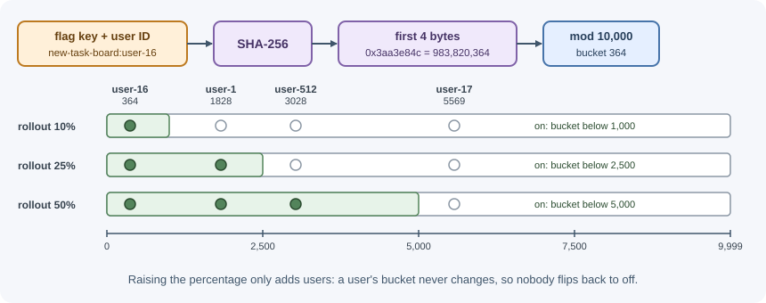

Feature Flags and Progressive Delivery¶
A feature flag (feature toggle) is a switch in the code whose position is decided at runtime, per request, from configuration you can change without deploying. Progressive delivery is the practice of releasing a change to gradually larger audiences (staff, 1% of users, 10%, everyone) while measuring it, using flags together with the deployment strategies from the previous lessons.
This lesson covers the four kinds of flags, how flags are evaluated on servers and in clients, targeting rules, percentage rollouts with stable hashing (with a worked example), dark launches, the flag lifecycle and how flag debt builds up, the OpenFeature standard, the main tools, testing code that has flags, and a small flag service you can read end to end.
Why it matters¶
Flags separate two decisions that deployment alone ties together: when code reaches production and when users get the behavior. That gives teams three abilities:
- Merge and deploy unfinished work safely (trunk-based development), so there are no long-lived branches and painful merges.
- Release to a small audience first, watch metrics, and widen or stop, without a deploy and at the speed of a configuration change.
- Turn something off in seconds when it misbehaves: an expensive query, a failing integration, a new UI that confuses users.
Flags also carry real risk. Every flag doubles the number of code paths, flags left in the code become confusing and dangerous, and a flag evaluated wrongly can expose an unreleased feature or hide a working one. Treating flags as first-class, owned, short-lived configuration is what makes them safe.
Real-world usage¶
- Pete Hodgson on martinfowler.com. The article Feature Toggles (aka Feature Flags) defines the four categories used on this page (release, experiment, ops, and permission toggles), compares them by how long they live and how dynamic their decisions are, and warns that toggles are inventory with a carrying cost that teams must actively remove.
- Google Cloud, June 2025. The incident report for the June 12, 2025 outage states that the change which failed "did not have appropriate error handling nor was it feature flag protected", and that "if this had been flag protected, the issue would have been caught in staging". Its remediations include requiring feature flags, disabled by default, for changes to critical binaries.
- Knight Capital, 2012. The U.S. SEC's order against Knight Capital describes how new code was not deployed to one of eight servers and how a flag that previously activated retired "Power Peg" code was repurposed for the new feature. On that one server the flag reactivated the old code, and the firm lost about $460 million in roughly 45 minutes: a lesson in flag debt and in never reusing flag names.
- Facebook. The SOSP 2015 paper Holistic Configuration Management at Facebook describes Gatekeeper, the system that controls feature rollouts by user attributes and percentages, alongside the configuration system whose changes are code-reviewed, tested, and canaried like code.
Popular tools and providers: LaunchDarkly, Unleash, Flagsmith, GrowthBook, ConfigCat, PostHog, AWS AppConfig, Firebase Remote Config, flagd, and the vendor-neutral OpenFeature SDKs.
How it works¶
What a flag looks like in code¶
// In a route handler: the flag decides which code path runs
const showNewBoard = flags.get("new-task-board", { userId: req.user.id, plan: req.user.plan }, false);
res.json(showNewBoard ? await boardV2(req.user) : await boardV1(req.user));
Three parts matter in every call: the flag key, the evaluation context (who is asking: user ID, organization, plan, country, app version), and the default value used if the flag service is unreachable or the flag does not exist. The default must always be the safe, old behavior.
Kinds of flags¶
| Kind | Purpose | Typical lifetime | Who changes it | Decision changes |
|---|---|---|---|---|
| Release | Hide unfinished or not-yet-launched code; roll out gradually | Days to weeks | Developers, release owner | Per user during rollout |
| Experiment | A/B and multivariate tests of product ideas | Weeks, until the result is significant | Product, data team | Per user, sticky |
| Ops (kill switch) | Turn off expensive or failing functionality; degrade gracefully | Long-lived by design | On-call engineers | Rarely, in incidents |
| Permission | Enable features for plans, beta programs, internal users | Long-lived, often permanent | Product, sales, support | Per account |
The kinds differ in how long they live and how they must be governed. A release flag that is still in the code six months later is debt; a kill switch that is removed is a missing safety mechanism. Some teams move long-lived permission flags out of the flag system into a proper entitlements model once they stabilize.
Evaluation: server-side and client-side¶
![Diagram: the request context for user-16 on the free plan is checked against the flag new-task-board in order; if the flag is disabled the off value is served; if the user is in the target list the target variant is served; if a rule such as plan equals beta matches the rule variant is served; otherwise if the user's bucket is below the rollout percentage the flag is on, else the default fallthrough off value is served; for user-16, bucket 364 is below 1000 for a 10% rollout, so the flag is on; the SDK keeps rules in memory, evaluates locally, and falls back to the code default if rules never loaded.](../flag-evaluation-flow.svg)
| Server-side SDK | Client-side SDK (browser, mobile) | |
|---|---|---|
| Where rules live | Downloaded into the server process, refreshed by polling or streaming | Usually not on the client; the client receives evaluated values for one user |
| Cost per evaluation | A local function call, microseconds | Read from a local cache; network only on refresh |
| Security | Rules and targeting data stay on the server | Anything sent to the client is visible to the user |
| Typical use | API behavior, backend paths, kill switches | UI changes, mobile features that must change without a store release |
| Failure mode | Service unreachable: keep last known rules, else code defaults | Offline: last cached values, else code defaults |
Two client-side cautions. First, never ship the full rule set (all flag keys, targeting lists, internal email domains) to browsers; send only the values for the current user, ideally evaluated by your server or the vendor's edge. Second, avoid "flicker", where the old UI renders and then switches: bootstrap the page with flag values computed on the server, or wait briefly for flags before first render.
Targeting rules¶
A flag definition is an ordered list of decisions:
- Enabled? A disabled flag serves its off value to everyone. This is also the kill switch.
- Individual targets: specific user or account IDs (QA accounts, a customer who asked for early access).
- Rules and segments: attribute matches such as
plan in [beta],email ends with @taskflow.example.com,country in [NZ],appVersion >= 3.2. Reusable groups of rules are segments. - Percentage rollout: a share of everyone else.
- Fallthrough (default rule): what everyone else gets.
The first matching step decides. Order matters: a staff rule placed after a 0% rollout never runs.
Percentage rollouts with stable hashing¶
A percentage rollout must be sticky: the same user must get the same answer on every request, every server, every day, or they will see the feature appear and disappear. Random numbers per request do not work. Instead, hash a stable identifier:
bucket = first 4 bytes of SHA-256("<flag key>:<user id>") as an integer, mod 10,000
on = bucket < percentage x 100

Worked example with real SHA-256 values for the flag new-task-board:
| User | First 4 bytes of the hash | As integer | Bucket (mod 10,000) | On at 10%? | 25%? | 50%? |
|---|---|---|---|---|---|---|
| user-16 | 3aa3e84c |
983,820,364 | 364 | yes | yes | yes |
| user-1 | 4356a514 |
1,129,751,828 | 1828 | no | yes | yes |
| user-512 | 6cfbac84 |
1,828,433,028 | 3028 | no | no | yes |
| user-17 | 63a8c7c1 |
1,672,005,569 | 5569 | no | no | no |
Properties worth knowing:
- Monotonic: raising 10% to 25% only adds users (buckets 1000 to 2499); nobody who had the feature loses it. Lowering the percentage removes the most recently added users first.
- Uniform: a good hash spreads users evenly. Simulating 100,000 user IDs gives 10.1% in the 10% bucket range. (The modulo adds a bias too small to matter: 2^32 is not a multiple of 10,000, which skews bucket probabilities by about 0.0002%.)
- Independent across flags: because the flag key is part of the hashed string, each flag picks a different 10%. In the same simulation, only 9.9% of the users inside flag A's 10% were also inside flag B's 10%, which is what independence predicts. Without the flag key in the hash, the same unlucky 10% of users would get every new feature first.
- Choose the unit deliberately: bucket by
userIdfor consumer features, byorganizationIdin a B2B product so a whole team sees the same UI, and by a device or session ID only for anonymous users. Changing the unit or the salt reshuffles everyone.
Unleash documents the same approach: it hashes the chosen stickiness field with the strategy's group ID (the flag name by default) using MurmurHash and compares the result with the rollout percentage.
Dark launches¶
A dark launch deploys and runs a feature in production without showing it to users: the flag is off for users but on for staff, or the new code runs in the background and its result is logged and discarded. It answers "does this work at production scale?" before "do users like it?". See advanced deployment patterns for dark launches alongside shadow traffic.
Progressive delivery¶
Progressive delivery combines the pieces:
- Deploy the code with the flag off (dark), using a rolling or canary deployment for the technical risk.
- Turn the flag on for staff and test accounts.
- Roll out to 1%, 5%, 25%, 50%, 100% of users, watching guardrail metrics for the flagged population (errors, latency, and the business metric the feature should move or must not harm).
- If a guardrail regresses, turn the flag off; some flag platforms can do this automatically when metrics cross a threshold.
- At 100%, wait a short bake period, then remove the flag from the code.
Deployment strategies control which servers run new code; flags control which users see new behavior. Mature teams use both: a canary catches a crash in the new binary, a flag rollout catches a confusing UI or a slow query that only some users trigger.
Flag lifecycle and flag debt¶
![Diagram: a release flag moves through six stages: created and off with code merged; testing with the flag on for staff; rolling out from 1% to 100%, with a path back to off in seconds and without a deploy if a problem appears; fully on at 100% for about a week; code cleanup removing the checks and the old path; and archived with the flag deleted; skipping cleanup creates flag debt; release flags should live days to weeks, while kill switches and permission flags are long-lived by design but still need an owner and review date.](../flag-lifecycle.svg)
Flag debt is what accumulates when flags reach 100% and stay in the code:
- Dead code paths that nobody tests but that can still be switched on.
- Confusing combinations (with 20 flags there are about a million theoretical states).
- The Knight Capital failure mode: a flag or an old code path that means something different on some servers than on others.
Controls that work:
- Every flag has an owner and an expiry or review date when it is created.
- CI fails when a release flag passes its expiry date (example below).
- The flag service reports flags that served a single value for 30 days.
- Removing the flag is part of the feature's definition of done.
- Flag keys are never reused; a new purpose gets a new key.
- Keep flag checks at the edges (route handlers, top-level components), not deep inside libraries, so removal is a small change.
The OpenFeature standard¶
OpenFeature is a CNCF project that defines a vendor-neutral API for flag evaluation. Application code calls the OpenFeature API; a provider connects it to a flag system (LaunchDarkly, Unleash, Flagsmith, flagd, your own service, or an in-memory provider for tests). Switching vendors then means changing the provider, not every call site.
Core concepts:
- Evaluation API:
getBooleanValue,getStringValue,getNumberValue,getObjectValue, each with a flag key, a default value, and an optional context;get...Detailsvariants also return the reason and variant. - Evaluation context: attributes about the subject, with
targetingKeyas the stable identifier used for bucketing. - Providers: adapters to flag back ends.
- Hooks: code that runs before and after evaluations, for logging, metrics, or validation.
- Domains: named clients bound to different providers.
Testing with flags¶
- Test both states of every flag the change introduces, with other flags at their production values. Testing every combination is impossible; testing each new flag on and off is cheap.
- Inject flags through an interface (or OpenFeature's in-memory provider) so tests set values directly instead of calling a network service.
- Make the default value the old behavior, and test that the code behaves correctly when the flag service is down.
- Run end-to-end tests with the flag states that production currently serves, not just "all on".
Choosing a tool¶
| Tool | Model | Notes |
|---|---|---|
| LaunchDarkly | SaaS | Mature targeting, experimentation, streaming updates, wide SDK coverage |
| Unleash | Open source (self-host) and SaaS | Strategies such as gradual rollout with stickiness; strong self-hosting story |
| Flagsmith | Open source (self-host) and SaaS | Flags plus remote configuration values |
| GrowthBook | Open-source core, self-host or cloud | Strong on experimentation and warehouse-native analysis |
| ConfigCat | SaaS | Simple pricing, config files evaluated locally by SDKs |
| AWS AppConfig | Managed AWS service | Feature flags and config with validators and deployment strategies that can roll back on alarms |
| flagd | Open source, OpenFeature project | A small flag daemon that reads flag definitions from files or other sources |
A home-grown flag service is reasonable for a handful of release flags and kill switches (the example below). Once you need audit logs, approval workflows, experimentation statistics, and a UI for non-engineers, a dedicated tool usually costs less than building those.
When to use and when not to use¶
| Use a flag for | Do not use a flag for |
|---|---|
Merging unfinished work into main |
Secrets or credentials |
| Gradual rollout of a risky behavior change | Per-environment infrastructure settings (use configuration) |
| A kill switch around an expensive or fragile dependency | Database schema changes (use expand and contract) |
| Beta programs and early access | Permanent authorization rules that belong in your permission model |
| A/B experiments on product ideas | Trivial changes where the flag costs more than the risk |
Also avoid flags in code that runs before the flag system is available (startup configuration), and avoid nesting flags inside flags.
Practical examples¶
A small flag service with stable bucketing¶
// src/flags/flag-service.js: a small flag service with stable percentage bucketing
import { createHash } from "node:crypto";
import { readFile } from "node:fs/promises";
const BUCKETS = 10_000; // 0.01% resolution
// Same flag + same unit (user, org) -> same bucket, on every server, forever.
export function bucketFor(flagKey, unitId, salt = flagKey) {
const digest = createHash("sha256").update(`${salt}:${unitId}`).digest();
return digest.readUInt32BE(0) % BUCKETS;
}
function matches(rule, ctx) {
const actual = ctx[rule.attribute];
switch (rule.operator) {
case "in":
return rule.values.includes(actual);
case "notIn":
return !rule.values.includes(actual);
case "endsWith":
return typeof actual === "string" && rule.values.some((v) => actual.endsWith(v));
default:
return false; // unknown operators never match
}
}
export function evaluate(flag, ctx, defaultValue) {
if (!flag) return { value: defaultValue, reason: "FLAG_NOT_FOUND" };
if (!flag.enabled) return { value: flag.offValue, reason: "DISABLED" };
const unitId = ctx[flag.bucketBy ?? "userId"];
if (unitId && flag.targets?.[unitId] !== undefined) {
return { value: flag.targets[unitId], reason: "TARGET_MATCH" };
}
for (const rule of flag.rules ?? []) {
if (matches(rule, ctx)) return { value: rule.value, reason: "RULE_MATCH" };
}
if (flag.rollout && unitId) {
const bucket = bucketFor(flag.key, unitId, flag.salt);
const inRollout = bucket < flag.rollout.percentage * (BUCKETS / 100);
return {
value: inRollout ? flag.rollout.value : flag.fallthroughValue,
reason: "PERCENTAGE_ROLLOUT",
bucket,
};
}
return { value: flag.fallthroughValue, reason: "FALLTHROUGH" };
}
export class FlagService {
#flags = new Map();
#timer;
constructor({ source, refreshMs = 30_000, logger = console }) {
this.source = source; // async () => array of flag definitions
this.refreshMs = refreshMs;
this.logger = logger;
}
async start() {
await this.refresh();
this.#timer = setInterval(() => this.refresh(), this.refreshMs);
this.#timer.unref();
}
stop() {
clearInterval(this.#timer);
}
async refresh() {
try {
const defs = await this.source();
this.#flags = new Map(defs.map((f) => [f.key, f]));
} catch (err) {
// Keep serving the last good rules; never crash because flags are unavailable
this.logger.error({ err }, "flag refresh failed; using last known rules");
}
}
get(key, ctx, defaultValue) {
return evaluate(this.#flags.get(key), ctx, defaultValue).value;
}
explain(key, ctx, defaultValue) {
return evaluate(this.#flags.get(key), ctx, defaultValue);
}
}
// Example source: a JSON file shipped by the flag pipeline (or an HTTP endpoint)
export const fileSource = (path) => async () => JSON.parse(await readFile(path, "utf8"));
The flag definitions, flags/flags.json (JSON has no comments, so the
owner and expiry are ordinary fields):
[
{
"key": "new-task-board",
"enabled": true,
"offValue": false,
"fallthroughValue": false,
"bucketBy": "userId",
"targets": { "user-qa-1": true },
"rules": [
{ "attribute": "email", "operator": "endsWith", "values": ["@taskflow.example.com"], "value": true },
{ "attribute": "plan", "operator": "in", "values": ["beta"], "value": true }
],
"rollout": { "percentage": 10, "value": true },
"owner": "team-boards",
"expires": "2027-01-31"
},
{
"key": "search-backend-v2",
"enabled": false,
"offValue": false,
"fallthroughValue": false,
"owner": "team-search",
"expires": "2026-12-15"
}
]
Evaluating new-task-board with this file gives:
{ userId: "user-16", plan: "free" } -> true PERCENTAGE_ROLLOUT (bucket 364)
{ userId: "user-1", plan: "free" } -> false PERCENTAGE_ROLLOUT (bucket 1828)
{ userId: "user-17", plan: "beta" } -> true RULE_MATCH
{ userId: "user-99", email: "ana@taskflow.example.com" } -> true RULE_MATCH
{ userId: "user-qa-1" } -> true TARGET_MATCH
search-backend-v2 for anyone -> false DISABLED
an unknown flag -> the caller's default, FLAG_NOT_FOUND
Design choices worth copying: evaluation is a pure function (easy to
test), the service keeps the last good rules when a refresh fails, the
default value is chosen by the caller, and explain returns the reason so
logs can show why a user saw a feature.
Using it in an Express route¶
// src/routes/board.js
import { Router } from "express";
import { flags } from "../flags/index.js"; // a started FlagService instance
export const board = Router();
board.get("/board", async (req, res) => {
const ctx = { userId: req.user.id, plan: req.user.plan, email: req.user.email };
const { value: useNewBoard, reason } = flags.explain("new-task-board", ctx, false);
req.log.info({ flag: "new-task-board", value: useNewBoard, reason }, "flag evaluated");
res.json(useNewBoard ? await buildBoardV2(req.user) : await buildBoardV1(req.user));
});
The same call through OpenFeature¶
// src/flags/openfeature.js: vendor-neutral evaluation (in-memory provider shown)
import { OpenFeature, InMemoryProvider } from "@openfeature/server-sdk";
await OpenFeature.setProviderAndWait(
new InMemoryProvider({
"new-task-board": {
disabled: false,
variants: { on: true, off: false },
defaultVariant: "off",
contextEvaluator: (ctx) => (ctx.plan === "beta" ? "on" : "off"),
},
}),
);
const client = OpenFeature.getClient("taskflow-api");
export async function useNewBoard(user) {
return client.getBooleanValue("new-task-board", false, {
targetingKey: user.id, // the stable ID providers use for bucketing
plan: user.plan,
});
}
// On shutdown: await OpenFeature.close();
In production you replace InMemoryProvider with the provider package
for your flag system; the call sites do not change.
Testing both states¶
// test/board.test.js
import { test } from "node:test";
import assert from "node:assert/strict";
import { evaluate } from "../src/flags/flag-service.js";
const flag = {
key: "new-task-board",
enabled: true,
offValue: false,
fallthroughValue: false,
rollout: { percentage: 10, value: true },
};
test("a user inside the 10% rollout gets the new board", () => {
assert.equal(evaluate(flag, { userId: "user-16" }, false).value, true); // bucket 364
});
test("a user outside the rollout keeps the old board", () => {
assert.equal(evaluate(flag, { userId: "user-1" }, false).value, false); // bucket 1828
});
test("a disabled flag acts as a kill switch", () => {
assert.equal(evaluate({ ...flag, enabled: false }, { userId: "user-16" }, false).value, false);
});
test("an unknown flag falls back to the caller's default", () => {
assert.equal(evaluate(undefined, { userId: "user-16" }, false).value, false);
});
Failing CI on expired flags¶
// scripts/check-flag-expiry.js: fail the build when a release flag is past its date
import { readFile } from "node:fs/promises";
const flags = JSON.parse(await readFile("flags/flags.json", "utf8"));
const today = new Date().toISOString().slice(0, 10); // YYYY-MM-DD compares as text
const expired = flags.filter((f) => f.expires && f.expires < today);
for (const f of expired) {
console.error(`flag "${f.key}" (owner ${f.owner}) expired on ${f.expires}: remove it or extend it`);
}
if (expired.length > 0) process.exit(1);
Add node scripts/check-flag-expiry.js to the CI pipeline. Extending a
date is allowed, but it becomes a visible, reviewed decision instead of
silent drift.
Best practices¶
- Default every flag call to the safe, old behavior.
- Give every flag an owner, a kind, and an expiry or review date.
- Hash a stable ID salted with the flag key for percentage rollouts; bucket by organization in B2B products.
- Keep rules on the server; send clients only their evaluated values.
- Log the flag value and reason with requests, so incidents can be traced to flag states.
- Watch guardrail metrics per flag cohort during rollouts.
- Remove release flags within days of reaching 100%; never reuse keys.
- Keep kill switches for expensive or fragile dependencies and test them regularly.
- Put flag checks at the edges of the code, not deep in shared libraries.
- Use OpenFeature (or your own thin interface) so call sites do not depend on one vendor's SDK.
In production¶
- A user sees the new feature appear and disappear. Detect: support reports of a flickering UI; logs show the same user with different flag values. Cause: bucketing on a value that changes (session ID, random number), or rules that depend on an attribute not always present. Fix: bucket on a stable user or organization ID and always send the same context.
- The flag service had an outage and the API slowed to a crawl. Detect: latency matches the flag client's timeout. Cause: flags were evaluated by a network call per request. Fix: use an SDK that evaluates locally from cached rules, with code defaults if rules never loaded.
- An unreleased feature name leaked. Detect: someone posts flag keys found in the browser's network tab. Cause: the client SDK received the full rule set. Fix: evaluate on the server or vendor edge and send only values; use neutral flag keys.
- Turning a flag off did not stop the problem. Detect: errors continue after the flag change. Cause: the slow code was not behind the flag, values were cached in the app for a long time, or a second flag also controlled the path. Fix: keep refresh intervals short, test kill switches, and map which code each flag guards.
- An old flag reactivated retired code. Detect: unexpected behavior after a config change to a flag "nobody uses". Cause: flag debt; the dead path was never deleted, or a key was reused. Fix: expiry dates enforced in CI, cleanup as part of done, and new keys for new purposes.
- A 10% rollout hit the same customers as the last three rollouts. Detect: the same accounts report every new bug. Cause: bucketing hashed only the user ID, without the flag key. Fix: include the flag key (or a per-flag salt) in the hashed string.
Important terminology¶
- Feature flag (toggle): a runtime switch that selects a code path.
- Evaluation context: the attributes describing who or what a flag is evaluated for.
- Targeting rule: a condition on context attributes that selects a variant.
- Segment: a reusable group of targeting rules.
- Variant: one of the values a flag can serve.
- Percentage rollout: serving a variant to a share of units chosen by hashing.
- Bucketing (stickiness): mapping a stable ID to a fixed bucket so the decision is consistent.
- Kill switch: an ops flag that turns off functionality quickly.
- Dark launch: running a feature in production without exposing it to users.
- Progressive delivery: releasing to growing audiences with measurement and automatic or manual stop points.
- Flag debt: flags and dead code paths left after their purpose ended.
- OpenFeature: a CNCF project defining a vendor-neutral flag evaluation API.
Common mistakes and misconceptions¶
- Using flags as a substitute for testing; a flag limits blast radius, it does not make the code correct.
- Evaluating flags with a network call on every request.
- Choosing an unsafe default value, so an outage of the flag service turns features on.
- Shipping all flag rules to browsers.
- Hashing only the user ID, so the same users are always first.
- Leaving release flags in the code indefinitely, and reusing old keys.
- Treating permission and kill-switch flags like release flags and deleting them.
- Assuming a flag can protect a database schema change; both code paths still need a compatible schema.
Revision questions¶
- What are the four kinds of feature flags, and how do their lifetimes differ?
- Why must percentage rollouts hash a stable identifier instead of using a random number per request?
- With buckets 0 to 9,999, a user's bucket is 2,731. At which rollout percentages is the user included: 10%, 25%, 30%, 50%?
- Why should the flag key be part of the hashed string?
- When would you bucket by organization ID instead of user ID?
- What should happen when the flag service is unreachable, and how should the SDK be built to make that safe?
- Explain how flag debt contributed to the Knight Capital incident.
- What does OpenFeature standardize, and what stays vendor-specific?